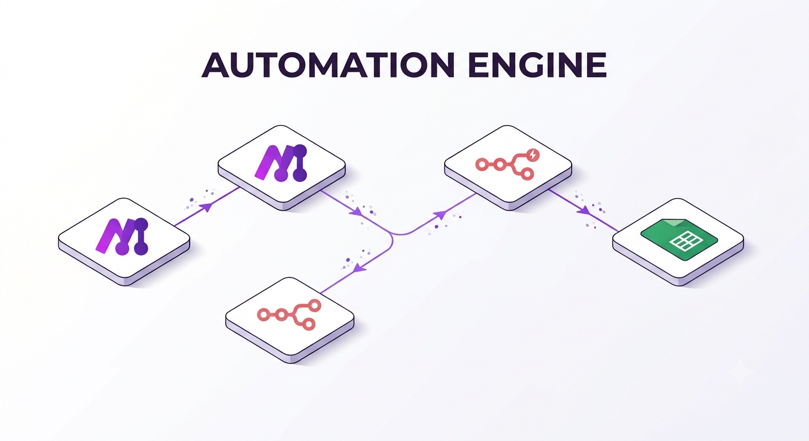
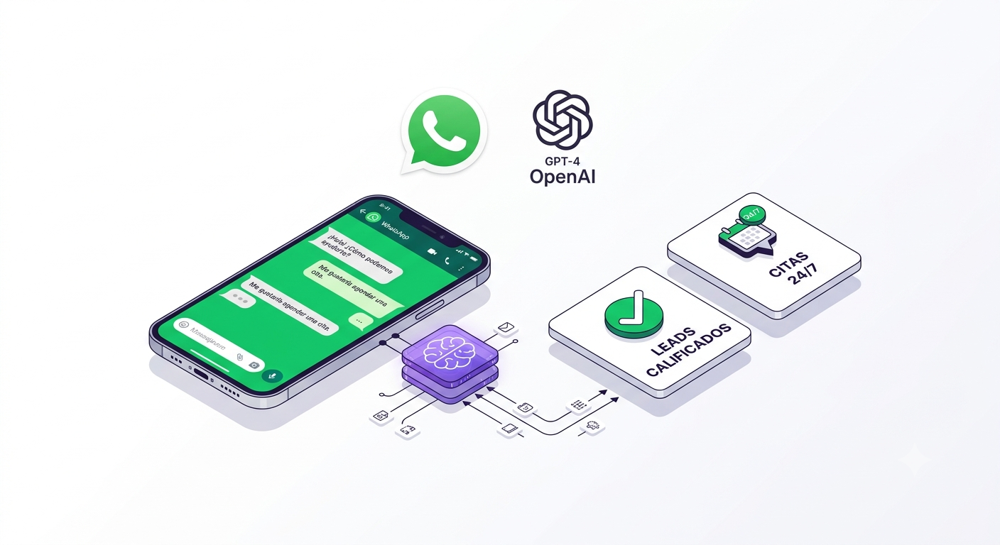
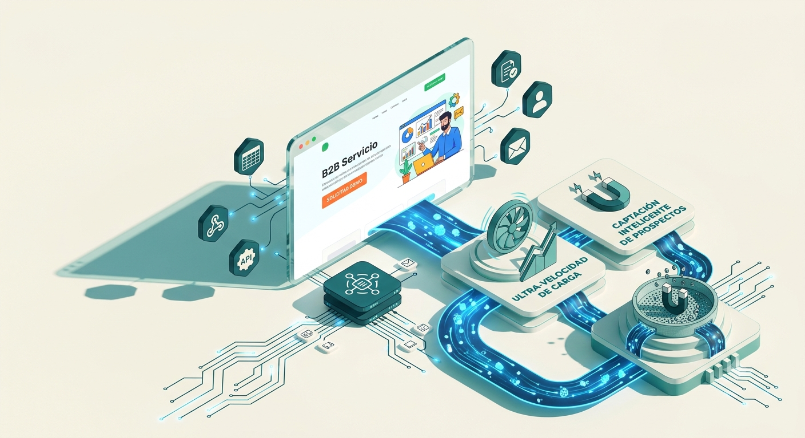
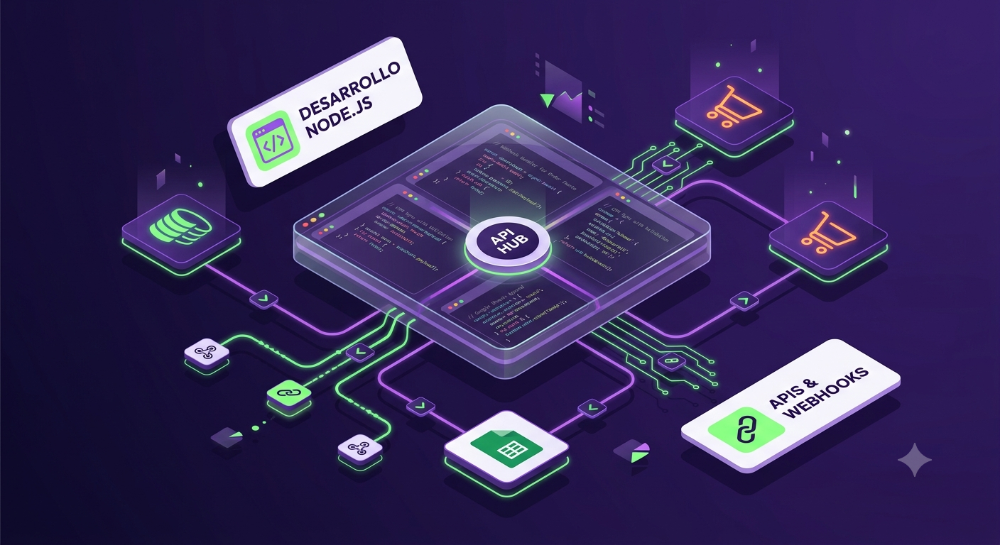

Automatización de Procesos (Make / n8n)
Servicios de automatización con Make y n8n para eliminar tareas repetitivas: conectamos tu CRM con Google Sheets, generamos reportes y notificaciones sin intervención manual.
Consultar →⚠️ No se encontró FONDO.mp4 en esta carpeta. Se usa el fondo animado como respaldo.
Escala tu negocio reduciendo costos operacionales. Automatizamos tu WhatsApp Business, conectamos tus CRMs y creamos flujos de trabajo inteligentes con Make, n8n y OpenAI en Maracaibo, Venezuela y LATAM.
// flujo activo

Servicios de automatización con Make y n8n para eliminar tareas repetitivas: conectamos tu CRM con Google Sheets, generamos reportes y notificaciones sin intervención manual.
Consultar →
Desarrollo de chatbots con inteligencia artificial que califican leads y agendan citas por WhatsApp Business las 24 horas, con el tono de tu marca.
Consultar →
Landing pages ultra rápidas pensadas para la captación de leads B2B, conectadas a tus automatizaciones desde el primer día.
Consultar →
Desarrollos a medida en Node.js para conectar sistemas que no se hablan entre sí: tu CRM, tu tienda, tus hojas de cálculo y tus canales de atención.
Consultar →Como agencia pionera de transformación digital y automatización e IA en Maracaibo, Zulia, ayudamos a empresas en Venezuela y la región a pasar de procesos manuales a flujos autónomos. Diseñamos flujos con Make y Node.js, entrenamos agentes de IA que hablan como tu marca y construimos la web que conecta todo. No vendemos herramientas sueltas, entregamos un sistema que trabaja mientras tú atiendes a tus clientes y haces crecer tu negocio.
"El agente de IA responde consultas de nuestros clientes al instante, incluso de madrugada. Redujimos el tiempo de respuesta casi a cero."
"Automatizaron todo nuestro proceso de agendamiento con Make. Ya nadie en el equipo tiene que copiar datos a mano entre plataformas."
"La página web quedó rápida y conectada directo con el chatbot. Se nota el trabajo hecho a la medida de nuestro negocio."
"Entendieron nuestro proceso interno y lo tradujeron en una automatización que realmente usamos todos los días."
Es conectar tus herramientas para que las tareas repetitivas —reportes, seguimientos, notificaciones— ocurran solas, sin que nadie las haga a mano.
No. Nosotros diseñamos, entrenamos y dejamos funcionando el agente; tú solo lo usas desde WhatsApp, tu web o la plataforma que prefieras.
Depende de la complejidad, pero la mayoría de los flujos con Make quedan funcionando entre 1 y 3 semanas desde que definimos el proceso.
Sí, trabajamos de forma remota con negocios en toda LATAM. Toda la implementación se coordina por WhatsApp y videollamada.
Videos y guías en nuestro canal de YouTube para que entiendas cómo automatizar tu propio negocio.

Te mostramos, paso a paso, cómo montar un agente de IA que responde y califica leads de tus clientes por WhatsApp.
Ver en YouTube →
Comparamos ambos enfoques y cuándo conviene cada uno para automatizar procesos con OpenAI y GPT-4.
Ver en YouTube →
Una lista práctica de las mejores herramientas RPA e IA para pymes que puedes implementar esta misma semana.
Ver en YouTube →